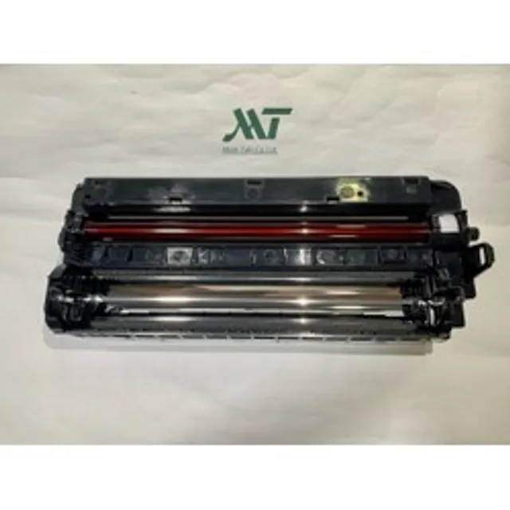

Linh kiện máy fax
Bộ Cụm mực 411 + cụm drum máy Fax KX-FAD 412 cho máy Fax KX-MB2030, KX-MB2025, KX-MB2010
850.000 đ
✔ Còn hàng — giao nhanh nội thành TP.HCM
Bộ cụm mực 411 và cụm drum 412 chính hãng cho máy fax Panasonic KX-MB2030, KX-MB2025 và KX-MB2010, đảm bảo chất lượng in ấn tuyệt vời và tăng tuổi thọ máy in.
Tên đầy đủ / model tương thích: Bộ Cụm mực 411 + cụm drum máy Fax KX-FAD 412 cho máy Fax KX-MB2030, KX-MB2025, KX-MB2010 - CỤM MỰC 411+ CỤM DRUM 412
Lưu ý: giá có thể thay đổi theo thời điểm và số lượng. Gọi hoặc nhắn Zalo kèm model máy in để được báo giá chính xác và tư vấn đúng mã hàng tương thích.
Có thể bạn cần
Sản phẩm cùng nhóm
Cụm trống Canon DR NPG-59 – Cho máy iR2002 / iR2004 / iR2004n / iR2006n - DR NPG 59
1.300.000 đ
Xem chi tiết →Mua kèm hoặc tham khảo thêm
- Xem bảng giá đầy đủ 773 mã hộp mực & linh kiện để so sánh trước khi đặt.
- Cần thay tại chỗ? Xem dịch vụ sửa máy in tận nơi TP.HCM.
- Máy đang lỗi mà chưa rõ nguyên nhân? Đọc hướng dẫn tự xử lý lỗi máy in trước khi thay linh kiện.
- Chỉ cần đổ mực, chưa cần thay hộp? Xem nạp mực máy in tận nơi.